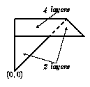

Home Page
F.A.Qs
Statistical Charts
Past Contests
Scheduled Contests
Award Contest
| Online Judge | Problem Set | Authors | Online Contests | User | ||||||
|---|---|---|---|---|---|---|---|---|---|---|
| Web Board Home Page F.A.Qs Statistical Charts | Current Contest Past Contests Scheduled Contests Award Contest | |||||||||
|
Language: Origami
Description  Origami is the old Japanese art of folding single sheets of paper into the forms of animals, flowers and other figures. Recently a programmable machine was constructed to make some of the simpler kinds of origami. This machine has a large board with coordinate system drawn on it. First, a square sheet of paper is placed on the board so that the lower left corner has coordinates (0; 0) and the upper right corner has coordinates (100; 100). Then the machine follows the program. The program consists of several steps. Each step is given as a line in the coordinate system at which the origami is to be folded. The line is represented by two points: the paper is folded from right to left when one is facing the second point from the first. The paper on the left side of the line remains in place and the paper on the right side is folded flat on top of it. After the execution of the last step one gets a resulting origami. It is necessary to pierce the origami in order make a hole for hanging. It is important to choose the place for making a hole carefully, because if the origami is too thick in this place it is difficult to make a hole, and if it is too thin it is not strong enough for hanging. Your task is to write a program that computes the number of layers of a paper in the given point. Origami is the old Japanese art of folding single sheets of paper into the forms of animals, flowers and other figures. Recently a programmable machine was constructed to make some of the simpler kinds of origami. This machine has a large board with coordinate system drawn on it. First, a square sheet of paper is placed on the board so that the lower left corner has coordinates (0; 0) and the upper right corner has coordinates (100; 100). Then the machine follows the program. The program consists of several steps. Each step is given as a line in the coordinate system at which the origami is to be folded. The line is represented by two points: the paper is folded from right to left when one is facing the second point from the first. The paper on the left side of the line remains in place and the paper on the right side is folded flat on top of it. After the execution of the last step one gets a resulting origami. It is necessary to pierce the origami in order make a hole for hanging. It is important to choose the place for making a hole carefully, because if the origami is too thick in this place it is difficult to make a hole, and if it is too thin it is not strong enough for hanging. Your task is to write a program that computes the number of layers of a paper in the given point.Input The first part of the input file contains a program for the origami machine. The first line contains the number of steps of the program. One line follows for each step of the program. Each line contains fold-line coordinates x1 , y1 , x2 , y2 (real numbers) separated by spaces. The program consists of at most 8 steps. The second part of the input file contains several potential points for making a hole. The first line contains the number of such places and each of the next lines contains coordinates of the point. Output For each of the potential points write a line containing the number of layers pierced through in this point. Note: Assume that the paper has zero thickness and therefore folds ideally. The pierced hole is a single point. The layers pierced exactly at the border of the paper or at the folded edge (within 0.000001) do not count as pierced layers. Sample Input 2 -0.5 -0.5 1 1 1 75 0 75 6 10 60 80 60 30 40 10 10 50 50 20 50 Sample Output 4 2 2 0 0 2 Source |
[Submit] [Go Back] [Status] [Discuss]
All Rights Reserved 2003-2013 Ying Fuchen,Xu Pengcheng,Xie Di
Any problem, Please Contact Administrator